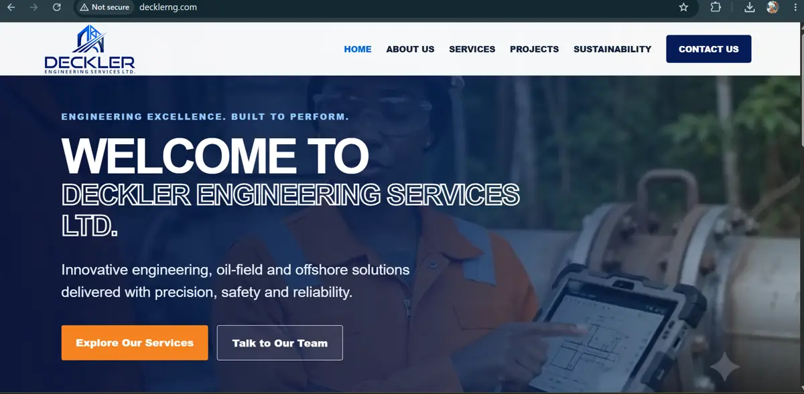

Software engineering student · Web developer · Lagos
I turn ideas intoworking digitalexperiences.
From live client websites to original full-stack products and search visibility work, I design, build and ship for the real web.
Selected proof / 2026

Deckler
Engineering
A production corporate website for an engineering and oil-field services company.
View case study ↗

ANIMXS
An anime-first social platform with feeds, communities, messaging, discovery, moderation and admin systems.
Enter product case study ↗Procurement
Automation
A request-and-approval workflow connecting Power Apps, SharePoint and Power Automate for structured business operations.
View system case study ↗Dotchman
SEO Work
Technical and on-page SEO, Search Console, sitemap/robots, indexing fixes and Google Business Profile work.
See visibility work ↗What I bring
Design sense.
Engineering mindset.
I work across the full path from interface decisions to implementation, deployment and visibility.
More than project thumbnails
See the experience
behind the work.
Software Engineering student with hands-on work across client websites, full-stack product development, business automation and search visibility.
Open my CV ↗About me →Have something worth building?